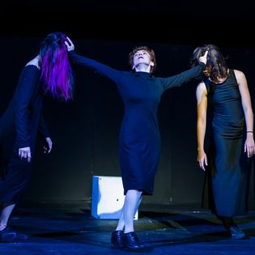
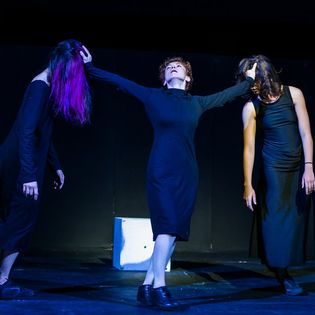

TRALFAMADORE (Kijów, Ukraina 2018)
Performans taneczny RB&Co

Reżyser i choreograf: Rusłan Baranow.
Tancerze: Olha Kebas, Anastasia Rembetska, Victoria Gorshkova, Maryna
Baranova, Violeta Matyushenko, Ruslan Baranov.
Dźwięk: Wiaczesław Los.
Tancerze: Olha Kebas, Anastasia Rembetska, Victoria Gorshkova, Maryna
Baranova, Violeta Matyushenko, Ruslan Baranov.
Dźwięk: Wiaczesław Los.
Na Tralfamadorze teksty są tworzone z taką kombinacją
symboli, „...żeby czytelnik, zerkając na nie i obejmując je wzrokiem, ujrzał obraz życia,
piękny i nieoczekiwany, pełen głębokiego sensu. W takim dziele nie ma początku, środka,
końca, intrygi, moralności, przyczyny i skutku”. (Kurt Vonnegut „Rzeźnia numer pięć”).
Przepływ między scenami spektaklu - momentami życia -
pięknymi i nieoczekiwanymi - jest darem przypadku i splotu okoliczności środowiskowych.
Pozwala to widzom konstruować własną rzeczywistość na podstawie tego, co widzą. Co –
jako osiągnięcie – jest kwestionowanie sztywności postrzegania rzeczywistości jako takiej.
A każda chwila życia zachęca do przeżywania jej jako pięknego obrazu niepewnej wieczności.
 
